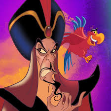

Cast : Nemo
"Aladdin"
The protagonist, a kind-hearted "diamond in the rough" street rat who dreams of a better life. He becomes the master of the Genie and eventually wins the heart of Princess Jasmine.
"Princess Jasmine"
The spirited and independent princess of Agrabah, who seeks freedom from palace life and eventually falls in love with Aladdin.
"Genie"
A powerful, blue-skinned magical being who can grant three wishes to whoever holds his lamp. He's known for his comedic personality and is one of the most iconic characters in the movie.

"Jafar"
The main antagonist, an evil sorcerer and the Royal Vizier of Agrabah. He schemes to overthrow the Sultan and gain control of the magical lamp..
"Abu"
Aladdin’s loyal pet monkey, known for his cleverness and love for treasure.
"Lago"
Jafar's sarcastic, wise-cracking parrot companion. Despite his comical personality, he helps Jafar with his evil plans.
"Sultan"
Jasmine’s father, the kind-hearted but somewhat bumbling ruler of Agrabah. He is manipulated by Jafar for much of the movie.
"Magic Carpet"
A sentient, flying carpet that helps Aladdin on his adventures. Though it doesn’t speak, it communicates through movements and gestures.